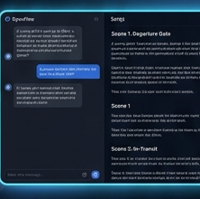
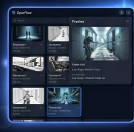
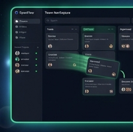
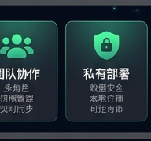

AI 剧本助手
一句话生成完整剧本：情节、场景、角色设定一次到位，支持多轮改写与版本管理。
面向短剧团队的 AI 创作平台：剧本、分镜、素材管理、多人协作一站完成。 Rust 驱动高性能工作流，支持 7 种语言与全平台覆盖。
商业产品 · 云端 SaaS + 企业私有化 · macOS / Windows / Linux / Web
从灵感一句话到可交付分镜，OpenFlow 将策划、生成、审阅与协作收敛在同一工作区。

一句话生成完整剧本：情节、场景、角色设定一次到位，支持多轮改写与版本管理。

自动产出镜头描述与配图，统一画风，支持专业格式导出，缩短前期筹备周期。

多角色权限、Workspace 隔离、实时任务与 WebSocket 推送，适合流水线式生产。

企业级数据安全：素材库本地可控，支持私有云与 Supabase 托管，满足合规需求。
Harness Engineering 统一 Agent、任务队列与可观测性，让 AI 生成可追踪、可取消、可协作。
小说/网文导入、项目立项、风格与模型路由配置
AI 编剧、场景拆分、角色与对白结构化
镜头板、资产生成任务、质量评审与版本对比
任务中心、发布面板、团队权限与用量统计
Flutter 跨平台客户端 + Rust 后端 API，桌面与 Web 体验一致；移动端能力持续扩展。

完整 Studio 工作区：分镜板、任务中心、质量评审与多窗口协作，适合产线团队常驻使用。

Flutter Web 与桌面同一套 API 契约，适合远程协作、审片与轻量创作，无需安装客户端。

面向监制与运营的移动审阅：浏览分镜、批注任务、推送通知，与桌面工作区实时同步。


OpenFlow 为商业产品：提供云端 SaaS（Free 试用与付费档）与企业私有化部署。大模型按 Token / 按图 / 按秒计量；私有化场景由客户自备或托管 LLM 密钥。
¥0 / 月
注册即可使用核心流水线，无需绑卡；适合个人试制与 PoC（配额为工程默认，上线前可能调整）。
¥58 起 / 月（参考）
更高积分 / 月、更多并发与存储；首期 CNY 收单 + Webhook 升级 plan_tier，USD 收银为后续里程碑。
usage_events 对账与超额策略定制 合同约定
私有化交付、专属 SLA、合规与公平使用条款；适合短剧产线与内容工厂。
model_pricing.json 运营可配| 能力 | 云端 Free | 付费订阅 | 私有化 / 企业 |
|---|---|---|---|
| 部署位置 | OpenFlow 托管云 | 托管云 + 更高配额 | 客户内网 / 专有云 |
| 大模型费用 | 平台路由 + 积分计量 | 含更高月度积分 | 客户自备或托管 Key |
| Workspace | Personal 为主 | 团队 / 工作室扩展 | Enterprise 多租户 |
| 支持 | 在线文档 + 工单 | 优先响应（规划） | 专属 SLA / 驻场（合同约定） |
付费档价格为路线图参考量级，非最终对外标价；私有化软件授权与实施费用另签合同。LLM 与云资源按实际用量计费。
用户手册与运维 Runbook 随商务授权交付。创作者请优先阅读《OpenFlow 用户操作手册》（覆盖 Studio 六步全链路）。
从登录、建项到剧本→美术→资产→分镜→视频→成片交付；含任务中心、质检、多平台分发与常见问题。
阅读用户手册总索引：架构、API、功能规格、运维 Runbook、路线图与安全说明。面向研发与运维的主入口。
打开文档中心交付步「多平台分发」内的预览、批量镜头、TTS 配音、导出与快捷键等细节说明。
短视频用户指南
开发者环境搭建、OpenAPI（/api/v1/docs）、WebSocket 协议；运维侧 Runbook（Workspace、计费、任务队列等）。
需要 Studio 全链路操作手册或私有化交付文档？请通过商务/支持渠道联系我们，我们会按合同提供配套文档包。
下面三条路径分别面向创作者、技术合作方与运维；默认 API 端口
8666（根路径为宣传页，/api/v1 为接口）。
https://api.example.com）。
/api/v1/health 与 Swagger。
openflow-server 制品（容器镜像或安装包），配置
DATABASE_URL、JWT、对象存储与 LLM 密钥（仅服务端）。
/api/v1 与 WebSocket
/api/v1/ws；静态 Flutter Web 可放 CDN 或同域。